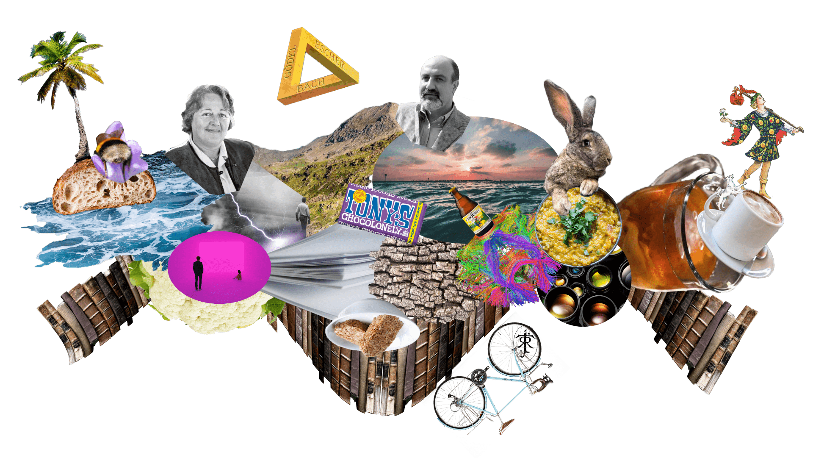
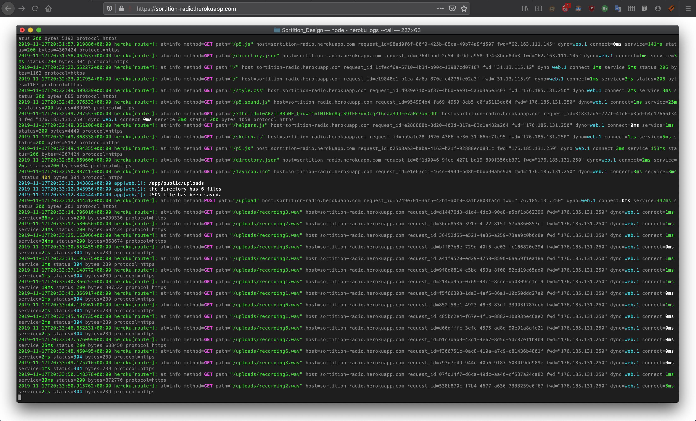
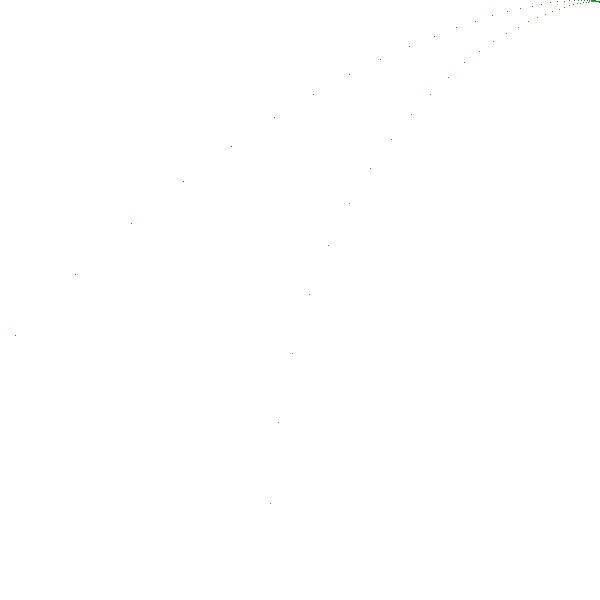
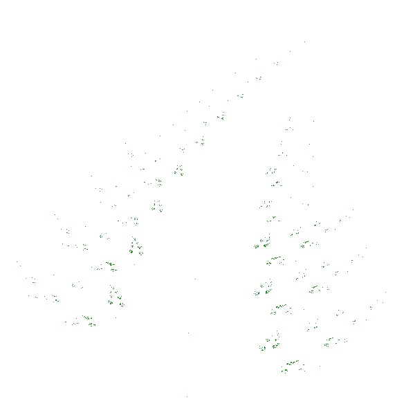
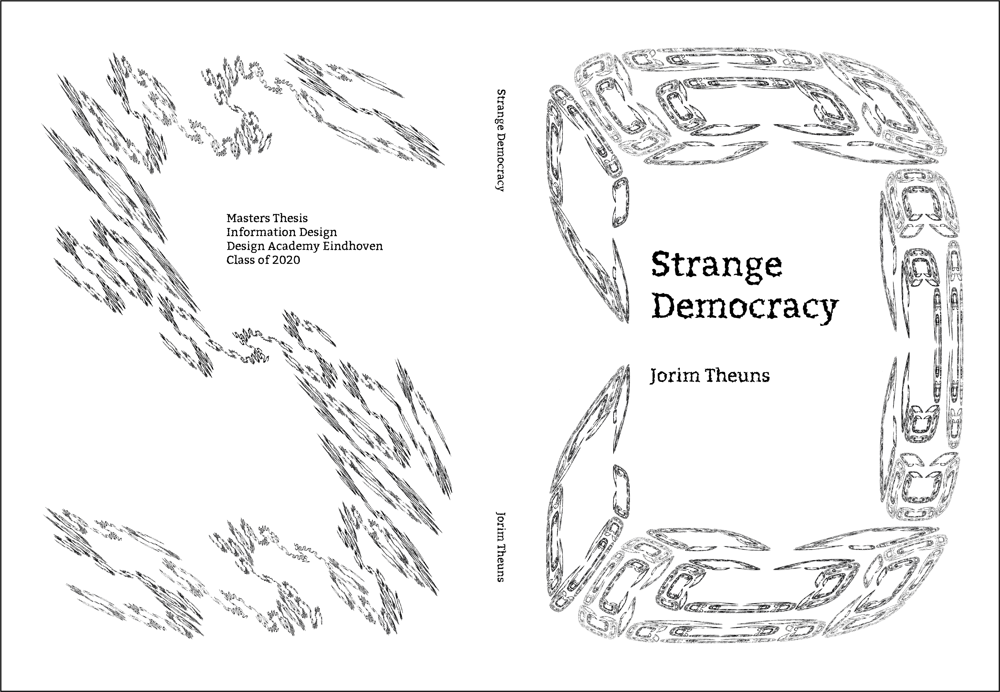
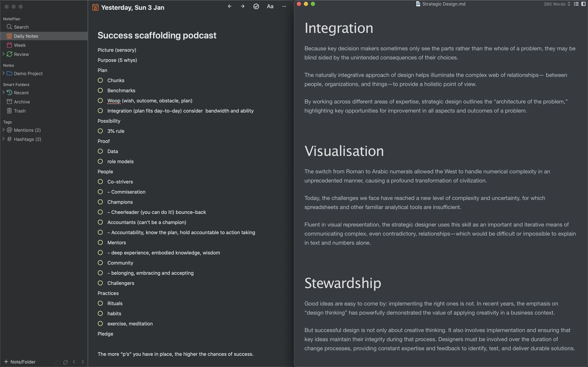

I'm a research driven designer who's obsessed with information: data that makes a difference.
Scroll horizontally to navigate parts
Scroll vertically to navigate sections
Step one: always follow the data. Map the system and stay curious, don't get tempted to fit the data to a model. Step two: action. Communicate with clarity and compassion, using antifragility to make systems that get stronger over time.
Tip: If you're using a mouse, you can scroll horizontally by holding shift while you scroll.

About me
Recent graduate, fired up and motivated to make an impact in forward thinking, people-focused organisations.
I didn't know it at the time, but my thesis started serendipitously, as I watched the BBC show QI.
Sorition, allthough very intruiging, did not immediatly lead me to further research. It was archived in my mind, and didn't resurface for years.
Antifragile Politics
In 2018, a project of mine at DAE culminated in a film called: "Noi Contro Loro". It was about how a far-right politician in Italy used social media to present an authentic imago, all the while optimising their posts to maximise traction. I realised that part of what made the politcian succesful was that they proudly displayed attacks against them and they profited from they chaos they themselves engineered - They were antifragile. Instead of contribute to the cacophony by publishing the film, I realised that working on the hidden layer - the root cause - might be more productive.
What is the root?
I asked myself: What if political polarisation is a symptom of an underlying, structural problem? Is there a root cause? If so, what is it? What would be an effective way to tackle it?
Eureka!
Linking Sortition to the question of polarisisation sparked a series of increasingly divergent and explorative, mini projects.
Political theory - Deep dive
Not having a great deal of experience in political theory, I needed to immerse myself in the field, and in the current state of the literature on Sortition. I summarised my initial findings in a large format research poster that would help me understand sortition in more detail.
Visualising sortition
To explore sortition more intuitively, I simulated a political microcosm to compare the information flow under various electoral systems. The dots represent a landscape of actors who live, eat, give-birth and die in a mini 2d drama.
The "real average" is a representation of what the "color" of an ideal democratic government of these dots should look like: a reflection of the average color of every living dot. The row of boxes below reflect various electoral systems. All of them reflect the dots to some degree, and proportional representation is the "best" of the vote-based systems, but sortition matches the real average most closely in almost every case. There are many facinating properties of this simulation,
I'd be happy to tell you all about them!
To compliment my mini design projects and my literature research, I organised informal sessions with people who worked "inside the system." These discussions were incredibly revealing, but I can't disclose the peoples identities as may become obvious from the following excerpts.
“I thought about what you mentioned: random people in power and first I thought, that’s crazy, these people would have no idea what they are doing! But then I slept on it and realised: most of the people on the city council are incompetent AND stubborn… at least random people wouldn’t be scared to compromise.”
"...at least random people wouldn’t be scared to compromise."
- Member of the Eindhoven City Council
"...it just matters that you can debate on the facts..."
"Politics is crazy these days, if you compromise on the party line, there’s no way you’ll be asked to take a leadership role, so people don’t debate good faith anymore, you know, they only care about optics and ambition, especially on the national level […] with randomness it doesn’t matter if theres more women one year, or more men, or any of that rubbish: it just matters that you can debate on the facts and compromise without betraying ‘your team,’ I like that..."
- VVD youth party board member
Field work
Sortition was promising, but most people would rather have the tyrant they know, over the randomly selected strangers they don't. The guiding question became: How can we learn to trust randomness?
Monkey wrench in the machine.
A podcast episode on random decision making.
As a part of my investigation on trusting randomness, I recorded myself for a whole day as I made made decisions using coinflips and dice rolls. It was an intruiging process, and I discovered that coin flips and dice rolls aren't the best way to reduce descision fatigue, as you have to come up with the options beforehand. After a full day of seemingly random decsisions, I was exhausted.
Interested? Listen to the podcast here:
Visualising the multiverse
One thing that struck me during the recording was how arbitrary my actions became. Anything could have happened, and I was highly concious of this. This poster is my attempt to visualise everything that didn't happen.
"Apophenia is the tendency to perceive meaningful connections between unrelated things."
- Wikipedia
The problem of Apophenia
Apophenia can be a major hinderance to trusting randomness. It is the human tendency to see pattern in noise. It has been observed in many fields and millions of people fall for it.
To explore the problems of apophenia, I taught myself how to give tarot readings. I was intruiged at how people would asign meaning to the order of the cards, even though they were, in the strictest sense, completly random.
The problem of apophenia was never truly resolved - even if I stressed the randomness of the order, people would be struck by the profoundity of some readings, or become highly defensive during a negative reading.
I continued to use Tarot for a few months, exploring what conditions enhanced or reduced the apophenic effect.
Random media
To further explore the effects of apophenia and of randomisation on the consumption of information, I persued two experiments, Onze zetels and random radio. The second a "low-fi" prototype of the first.
(Our seats): Experiments in democratic empowerment through design.
Onze zetels was the first iteration of a holistic "coming together" of the sortition project. The idea was to randomly select 5 designers and have them design 5 different chairs or thrones that would have the ability to record and playback audio recordings of creator/audience responses to the question: "If you were in power, what would you do?"
The first low-fi prototype was designed to probe how people might use such a random database of recordings. It took the form of a website called Random Radio, and while it worked as intended, I didn't explore the idea further.

Critisism, feedback
The mini-project was hailed with enthusiasm by friends and family, but heavilly critisized by the head of the Information Design department. He asked: "Where is the design? Everything is random, you're using design as a gimmick."
I confess to feeling a little missunderstood, but I understood the critique: the project was fun, but didn't communicate the essense of the research. I went back to the drawing board.
CHAOS
Is randomness chaotic?
People around me kept making allusions to chaos, a lack of structure. Randomness couldn't be a useful tool because it was chaotic. I picked up a book titled CHAOS, and started reading. I soon realised that randomness was NOT chaotic.
Barnesly Fern
Algorithmic investigations
One of the concepts explored in the book was the barnsely fern, where a short set of transformation rules, iterated over at random, produced a fractal pattern. I iterated over the rule set in other, non random ways, and never got the same result. I reaslised that randomness has some special characterisitic that allowed the fractal structure to emerge.
Random Iteration
Time iteration
Noise iteration

Chaos iteration

Experimentation
Fractal fonts
Barnesly font
Excited by the possibilities of creating fractals with random selection, I created the first 27 characters of what is to my knowledge, the worlds first truly fractal font. They cannot exist in an ordinary font file as they must be generated dynamically. They are neither bitmaps, nor vectors. They are sets of vector transformations that can generate fractal letterforms at quasi-infinite resolution.
Randomisation
Randomised control trials and the Monte Carlo method
Reccurence plots
The (un)structure of randomness
I was intruiged, what was the characteristic that made randomness essential in probing the deep structure of these relationships?
Chaos scientists in the 1980's developed a technique called reccurence plotting, that allowed them to find higher order structure in chaotic systems. I recreated these reccurence plots for a number of systems, including a simple random number generator, and what struck me was this: with randomness, you can see the boundary of the canvas! Large numbers of random inputs allow you to be sure that the structure of the output is reflecting the structure of the higher order system (the plot), rather than some prior bias (the function).
Eureka v2
Randomisation in Science
Going back to the drawing board (killing my darlings) allowed me to make a second serendipitous connection: Scientists and engineers use randomisation all the time! Exactly for the reason that large numbers of randomly selected inputs act as a kind of blank canvas, an egalitarian sampling method that breaks information feedback loops that cause bias and allows for the exploration of complex systems.
"Iterating over the inputs of a phase space at random allows you to map the deep, higher order structure of a complex system."
From my thesis: Strange Democracy

More Interviews
Experts in political theory, sortition and complexity.
Having diverged to the point of serendipity, I started to converge around a design question: what should I do with all this information?
I realised that the nature of my reasearch had been highly connective: bringing together insights from very disperate fields. I thought that I could create something that mirrored that connectivity, by creating a mini-documentary about randomness, science and the future of democracy, containing interviews with experts from each field. I sent out emails and got a great number of reponses.
Expanding the bandwidth of democracy.
Exerpt from interview with Hubertus Hofkirchner and John Burnheim
Portfolio to be continued...
Please come back later for more updates on the Dembrane story.
Unforgettable
Prizewinning Hackathon project
Unforgettable was a project I worked on with my team: ExpLOD during HackaLOD 2019.
Photos: Jacqueline van der Kort | KB
Outcome
Process Gold XR
Experimental VR data-dashboard
In the summer of 2018, I was hired by ProcessGold B.V., now UiPath Process Mining, to implement a VR version of their process graph.
Demo
Feel free to explore the demo! On desktop, you can walk around using the WASD keys and you can query nodes by clicking while the cursor (black circle) is over them. If using a VR headset, enter the scene by using your controller to click on the VR goggles in the bottom right. The demo will also work on mobile, but you will not be able to navigate the scene.
Bachelor's Thesis
Exploring movement data visualisation in virtual reality.
Duing my bachelor's thesis, I collaborated with researchers at the ITC faculty in Enschede to develop several functioning virtual reality movement data visualisation prototypes, and developed a holistic, user centered framework for continued virtual reality data visualization (VRDV) research at the ITC. The project broadly followed a design science approach; with literature and state-of-the-art reviews being performed in parallel with iterative prototyping, user testing and requirement analysis. For this thesis I recieved a 10/10.
Hobby: Zettelkasten
Personal Knowledge Management Network
As an avid note taker, I was always frustrated that after taking a note, it ususally ended up gathering dust in a folder somewhere. My collection of notes was exactly that, a collection, with a strict, folder-based heirachy. Putting the theory I had learned during Dembrane and Unforgettable into practise lead me to cultivate a knowledge management system based on the principles of antifragility and rhyzomatics, with techniques from the world of linked open data.
Notes, calendar, reminders and contacts. All from one database.
Indead of siloing all my information based on the process it was involved with, I started storing all my data in one interoperable file format called Markdown. Notes could now refer to oneanother, calendar items could link to reminders or contacts and vice versa. This is based on the file management principle called "Pillars, pipelines, vaults." All my pipelines could now draw from the same data vault.

Technologies
This system is made possible through a cloudkit architecture, and is backed-up by automated commits to a private github repository using Cron-Jobs. Any app that can read markdown can now interface with the data vault. I currently use Obsidian to map the vault, Typeora to write long form, and Noteplan 3 to access the notes on my phone, push notifications, and to interface with reminders and calendars.


{kind=link}